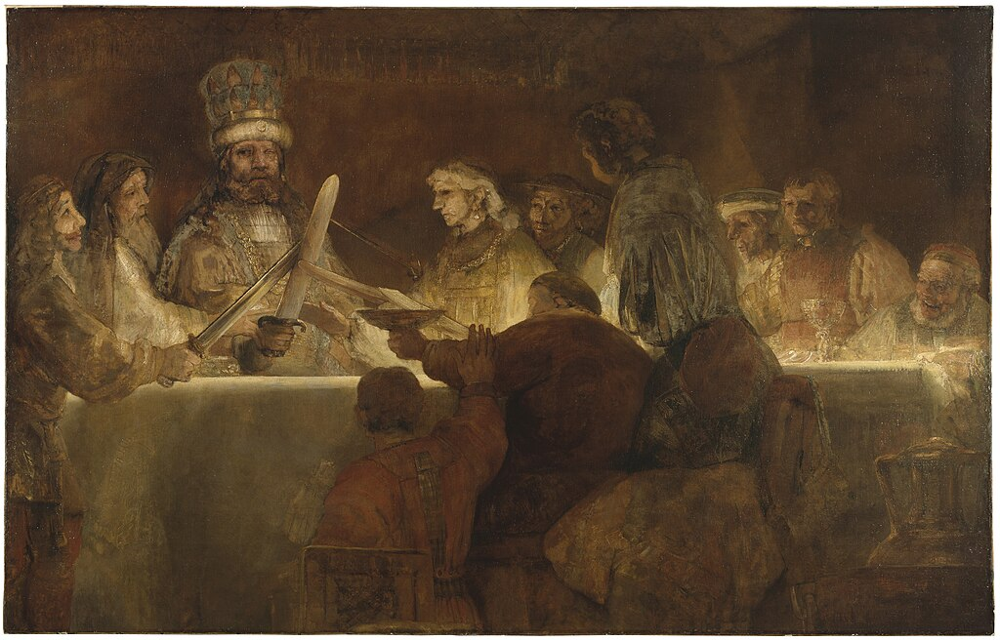
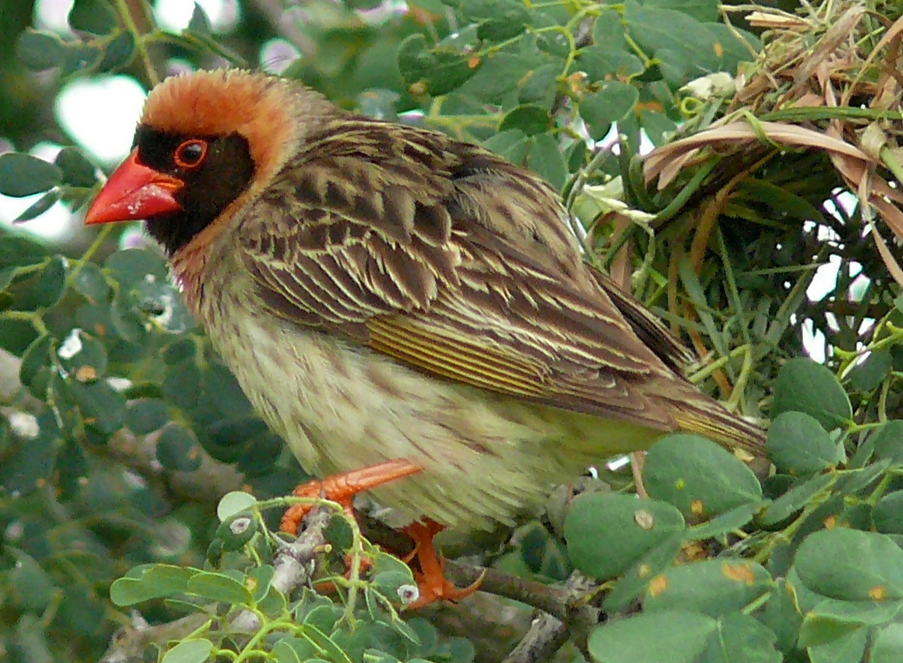

Today's featured picture

The Conspiracy of Claudius Civilis is an oil painting by the Dutch painter Rembrandt, produced around 1661–62. It depicts an episode from Tacitus's Histories of the Batavian rebellion (AD 69–70), led by the one-eyed chieftain Claudius Civilis. The painting was commissioned by the city council of Amsterdam for the Town Hall, and was originally Rembrandt's largest-ever painting. It was placed briefly in the town hall but eventually returned to Rembrandt, who may never have been paid for the work. In financial difficulties, he was forced to cut the painting down in size and partly repaint it, after which it was sold. After passing between various private owners, it was eventually deposited in the Royal Swedish Academy of Fine Arts, and is now in the collection of the Nationalmuseum in Stockholm.
From today's featured article

The red-billed quelea (Quelea quelea) is a small, migratory, sparrow-like bird of the weaver family, Ploceidae, native to sub-Saharan Africa. It is approximately 12 cm (4.7 in) long and weighs 15 to 26 g (0.53 to 0.92 oz) Non-breeding birds have light underparts, striped brown upper parts, yellow-edged flight feathers and a reddish bill. Breeding females attain a yellowish bill. Breeding males have a black (or rarely white) facial mask, surrounded by a purplish, pinkish, rusty or yellowish wash on the head and breast. The species avoids forests, deserts and colder areas. It constructs oval roofed nests woven from strips of grass hanging from thorny branches, sugar cane or reeds. It breeds in very large colonies. The quelea feeds primarily on seeds of annual grasses, but also causes extensive damage to cereal crops. It is regarded as the most numerous undomesticated bird on earth, with the population sometimes peaking at an estimated 1.5 billion individuals.
Ancient India

55,000 years ago, the first modern humans, or Homo sapiens, arrived on the Indian subcontinent from Africa.[26][27][28] The earliest known modern human remains in South Asia date to about 30,000 years ago.[26] After 6500 BC, evidence for domestication of food crops and animals, construction of permanent structures, and storage of agricultural surplus appeared in Mehrgarh and other sites in Balochistan, Pakistan.[84] These gradually developed into the Indus Valley Civilisation,[85][84] the first urban culture in South Asia,[86] which flourished during 2500–1900 BC in Pakistan and western India.[87] Centred around cities such as Mohenjo-daro, Harappa, Dholavira, and Kalibangan, and relying on varied forms of subsistence, the civilisation engaged robustly in crafts production and wide-ranging trade.[86]
Medieval India

The Indian early medieval age, from 600 to 1200 CE, is defined by regional kingdoms and cultural diversity.[111] When Harsha of Kannauj, who ruled much of the Indo-Gangetic Plain from 606 to 647 CE, attempted to expand southwards, he was defeated by the Chalukya ruler of the Deccan.[112] When his successor attempted to expand eastwards, he was defeated by the Pala king of Bengal.[112] When the Chalukyas attempted to expand southwards, they were defeated by the Pallavas from farther south, who in turn were opposed by the Pandyas and the Cholas from still farther south.[112] No ruler of this period was able to create an empire and consistently control lands much beyond their core region.[111] During this time, pastoral peoples, whose land had been cleared to make way for the growing agricultural economy, were accommodated within caste society, as were new non-traditional ruling classes.[113] The caste system consequently began to show regional differences.[113]
Continue reading Click here